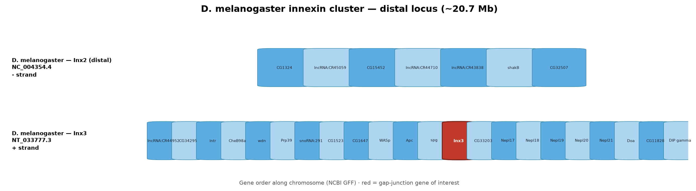

Full gene-order context from NCBI annotations — Full gene-order context from NCBI annotations (±180 kb neighbour windows).
dmel innexin cluster proximal

dmel innexin cluster distal
inx2 cross clade gene order